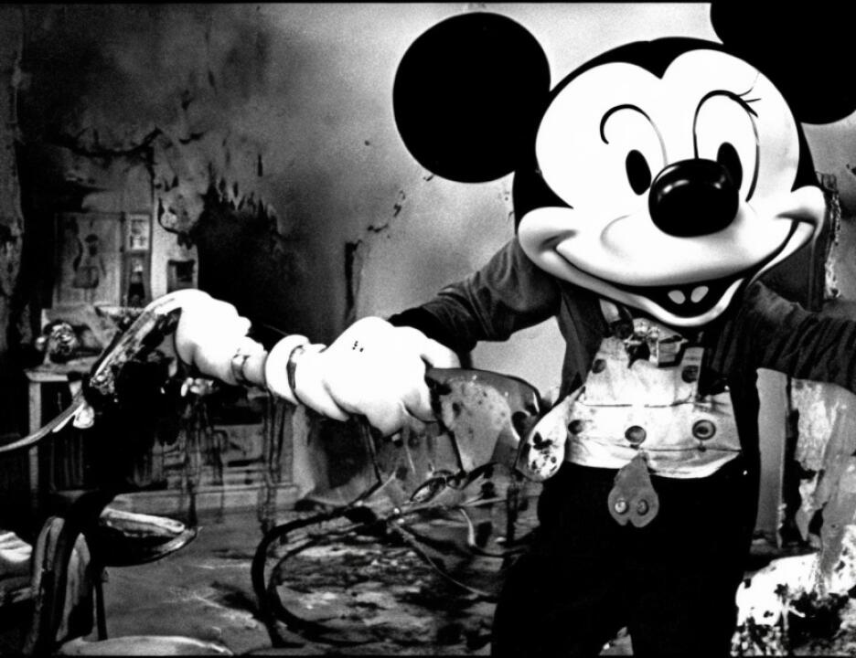

25 MR. FITZGERALD: Yes, Judge. We'll submit something
3926
1 next week indicating perhaps a proposed redacted indictment
2 that's pruned.
3 THE COURT: All right. Obviously some of the overt
4 acts are then incorporated by reference in subsequent counts
5 and you can't eliminate them in Count One.
6 My next note was whether the firearm acts, 285 and
7 286, a point raised in the motions to dismiss and I think the
8 government's submission today, makes clear that the firearm is
9 the bomb itself. And that's, I think, not a matter of basis
10 for dismissing the counts but simply to make clear that the
11 firearm is, as said earlier on, the firearm includes a
12 destructive --
13 When I finish.
14 MR. COHN: Okay, Judge. I just want to be heard.
15 THE COURT: Silence is not acquiescence. I'm blocked
16 out until 7:00.
17 I have never seen the press look as distressed.
18 Okay. Two other points: The government suggests a
19 felony murder instruction as an alternate to premeditation. I
20 don't think the presence or absence of premeditation is going
21 to be something which gives this jury any pause, and I propose
22 not to include the felony murder charge because anything which
23 can be done to simplify without affecting serious interests
24 should be done.
25 The government also asks for a conscious avoidance
3927
1 instruction. I know that I'm mixing the charge with the
2 counts but I think of them as being so interrelated.
3 Conscious avoidance in this context is very different
4 from conscious avoidance in the money laundering context where
5 the motive for people knowing only is on a need to know basis.
6 In this context it is quite different.
7 I note, just in passing, there's a little conflict
8 between the Pinkerton theory and the conscious avoidance
9 theory, but we have crossed that bridge.
10 Here, if there is conscious avoidance, it wasn't for
11 fear of criminal liability, which is, I think, the last thing
12 that these defendants were thinking of, it was because
13 envisioning themselves to be engaged in a quasi military
14 operation and concerned of what informants might know and
15 disclose, people were left out of the loop. It is my intent
16 not to charge on conscious avoidance.
17 Venue. Am I correct that the defendants have stated
18 on the record and in their papers any and all objections they
19 have to venue?
20 Mr. Schmidt?
21 MR. SCHMIDT: Thank you. Yes.
22 THE COURT: Does the defendant have any objection to
23 venue other than as set forth in its submission?
24 MR. SCHMIDT: No, your Honor.
25 THE COURT: So that the record is absolutely clear,
3928
1 the defendant Al-'Owhali concedes the existence of venue with
2 respect to the false statement charged in the indictment --
3 defendant El Hage?
4 MR. SCHMIDT: I don't believe we concede that, your
5 Honor.
6 THE COURT: This is an area of the law in which
7 silence is acquiescence, so I think you need to -- there are
8 cases which hold that a defendant who fails in his Rule 29
9 motion to make a challenge to venue waives that.
10 MR. DRATEL: Your Honor, then we challenge venue as
11 to the Count 308.
12 THE COURT: What is the basis for venue?
13 MR. FITZGERALD: Your Honor, the investigation being
14 conducted out of the Southern District of New York and the
15 agent testified he did it in conjunction with Agent Coleman
16 from New York, and the false statement would impact upon that
17 investigation being conducted out of this district.
18 THE COURT: So that anywhere in, well, in the United
19 States to which the agent would question a person on with
20 respect to this investigation would have venue in Southern
2